課前暖身漫畫：摸到紅球的機會是一半嗎？
桌遊咖啡館的新遊戲要決定誰先玩：布袋裡有 3 顆黃球、1 顆紅球，摸到紅球的人先開始。阿骰說「只有紅、黃兩種，所以我有一半的機會」——小棋把球倒在桌上一字排開，請他一顆一顆數。這一節要回答的就是：機會到底該怎麼算？
重點 1：機率——用 0 到 1 之間的數表示可能性
重點整理與敘述
- 擲硬幣、擲骰子、抽籤、取球這類操作叫做實驗（或試驗）；實驗中想觀察的情況叫做事件。
- 用一個數表示某事件發生的可能性大小，這個數就是該事件的機率。
- 機率一定介於 \(0\) 和 \(1\) 之間（可以等於 \(0\) 或 \(1\)），也常寫成百分率：
- 不可能發生的事件，機率是 \(0\)。例：只裝紅球的袋子裡摸出白球。
- 一定會發生的事件，機率是 \(1\)（\(= 100\%\)）。例：只裝紅球的袋子裡摸出紅球。
- 機率愈接近 \(1\)，愈容易發生；愈接近 \(0\)，愈不容易發生。
- 例：摸彩時每 \(10\) 人有 \(9\) 人中獎，說中獎機率是 \(90\%\)，是很高的機率。
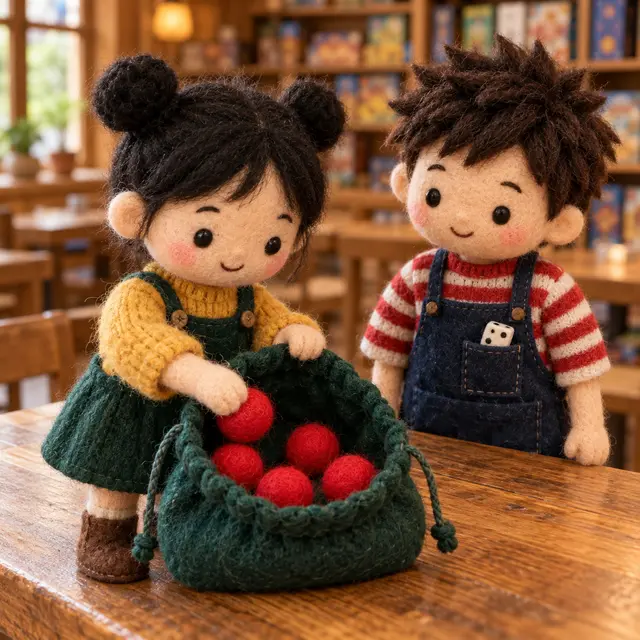
視覺互動探索：機率尺
調整袋子裡紅球、白球的數量，再選一個事件。看看機率落在 \(0\) 到 \(1\) 的哪裡；什麼時候會剛好是 \(0\) 或 \(1\)？
形成性評量 (機率的意義)
Q1. 投擲一顆公正的骰子一次，下列哪一個事件發生的機率是 \(0\)？
解析：答案為 C。骰子的點數只有 \(1\) 到 \(6\)，不可能大於 \(6\)，是不可能事件，機率 \(0\)。
A 錯：每一面都小於 \(7\)，是必然事件，機率 \(1\)。
B 錯：偶數有 \(2\)、\(4\)、\(6\) 三種，機率 \(\frac{1}{2}\)。
D 錯：點數 \(1\) 只有一種，機率 \(\frac{1}{6}\)。
Q2. 下列哪一個數可能是某個事件發生的機率？
解析：答案為 A。機率一定介於 \(0\) 和 \(1\) 之間，\(0.6\) 符合。
B 錯：機率不會是負數，最小是 \(0\)（不可能事件）。
C、D 錯：\(\frac{7}{5} = 1.4\)、\(120\% = 1.2\)，都比 \(1\) 大；一定會發生的事件，機率也只是 \(1\)。
重點 2：實驗的次數愈多，比值愈接近機率
重點整理與敘述
- 真的去擲一枚硬幣很多次，記下「正面出現次數 \(\div\) 投擲總次數」的比值：
- 次數少時，比值可能離 \(\frac{1}{2}\) 很遠，甚至連續好幾次都同一面。
- 次數愈多，正、反面的次數通常愈接近相等，比值愈靠近 \(\frac{1}{2}\)，但不一定剛好等於。
- 為了計算，我們假設實驗是公正的：材質均勻的硬幣，出現正面、反面的機會相等，機率各是 \(\frac{1}{2}\)。
- 機率是「可能發生的情形」，不是保證：
- 正面機率是 \(\frac{1}{2}\)，不代表擲兩次就一定一正一反。
- 前面連續出現正面，下一次出現正面的機率仍然是 \(\frac{1}{2}\)，硬幣不會「記得」前面的結果。
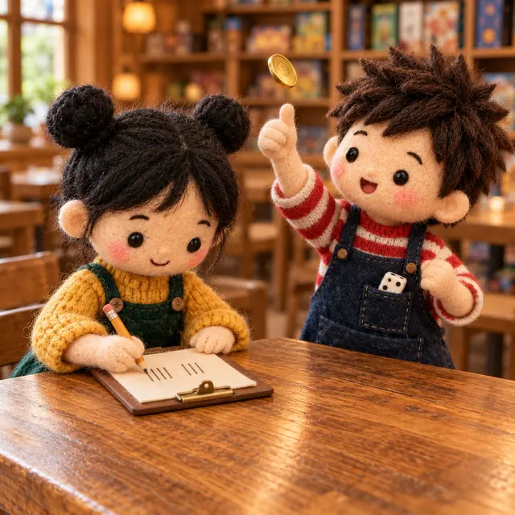
視覺互動探索：擲很多次硬幣
按按鈕擲硬幣，折線是「到目前為止正面的比值」。先只擲 10 次，再一路擲到幾百、幾千次：折線最後停在哪裡附近？中間有沒有出現連續好幾次同一面？
形成性評量 (實驗與機率)
Q3. 小棋連續擲一枚公正的硬幣，前 \(5\) 次都出現正面。阿骰說：「下一次一定比較容易出現反面。」第 \(6\) 次出現反面的機率是多少？
解析：答案為 D。每一次投擲都只有正、反兩種機會相等的結果，硬幣不會「記得」前面出現什麼，第 \(6\) 次出現反面的機率仍是 \(\frac{1}{2}\)；阿骰的說法不正確。
A、C 錯：把「6 次裡的第幾次」當成結果來數，但每一次投擲的結果只有正、反兩種。
B 錯：機率不是保證，前面連續正面不會讓反面「一定」出現。
Q4. 阿骰把一枚公正的硬幣擲了 \(200\) 次，正面出現 \(92\) 次。下列敘述何者正確？
解析：答案為 B。實驗的比值會隨著次數變動，次數愈多通常愈接近 \(\frac{1}{2}\)。
A 錯：\(\frac{92}{200} = \frac{23}{50}\) 只是這 \(200\) 次的實驗比值，公正硬幣出現正面的機率是 \(\frac{1}{2}\)。
C 錯：機率不是保證，後面的結果不會「補回」前面少的次數。
D 錯：公正的硬幣擲 \(200\) 次，正面不剛好 \(100\) 次是很常見的事。
重點 3：每種結果機會相等，才能說機率是 \(\frac{1}{n}\)
重點整理與敘述
- 一個實驗所有可能的結果共 \(n\) 種，每一種發生的機會都相等時，每一種結果的機率是 \(\frac{1}{n}\)：
- 公正的硬幣：正、反 \(2\) 種，各 \(\frac{1}{2}\)。
- 公正的骰子：\(1\) 到 \(6\) 點共 \(6\) 種，各 \(\frac{1}{6}\)。
- 籤筒裡編號 \(1 \sim 35\) 的 \(35\) 支籤：每支被抽到的機率 \(\frac{1}{35}\)。
- 如果各種結果機會不相等，就不能說每種是 \(\frac{1}{n}\)：
- 投擲圖釘：針尖朝上、朝下只有 \(2\) 種，但針尖輕、針帽重，兩種機會不相等，不能各算 \(\frac{1}{2}\)。
- 投擲長方體橡皮擦：\(6\) 個面大小不一樣，各面朝上的機率不相等。
- 「只有兩種結果」不代表機率是 \(\frac{1}{2}\)：先問「這兩種的機會一樣嗎？」
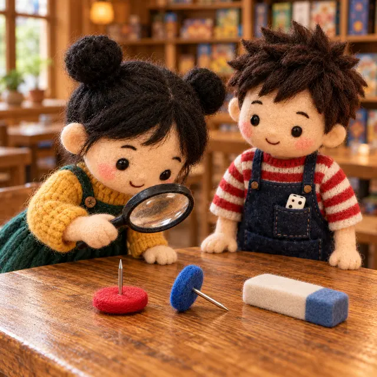
視覺互動探索：旋轉的飛鏢靶
飛鏢靶在旋轉，每一格被射中的機會相等。選擇等分的格數、調整紅色的格數：結果永遠只有「紅」「白」兩種，射中紅色的機率卻會跟著變。
形成性評量 (機會相等)
Q5. 下列哪一個實驗，可以說「每一種結果發生的機會都相等」？
解析：答案為 C。材質均勻的硬幣，正、反面出現的機會相等。
A 錯：圖釘針尖輕、針帽重，兩種結果機會不相等。
B 錯：長方體各面大小不一樣，大的面比較容易朝上。
D 錯：紅色占的區域比較大，射中紅色的機率是 \(\frac{3}{4}\)，紅、白兩種機會不相等。
Q6. 一個旋轉的飛鏢靶分成 \(10\) 等分，其中 \(4\) 格紅色、\(6\) 格白色，每一格被射中的機會相等。小棋說：「只有紅、白兩種結果，所以射中紅色的機率是 \(\frac{1}{2}\)。」射中紅色的機率應該是多少？
解析：答案為 A。機會相等的是「每一格」，共 \(10\) 格、紅色 \(4\) 格：
\[\frac{4}{10} = \frac{2}{5}\]
B 錯：紅、白兩種結果機會不相等，不能各算 \(\frac{1}{2}\)。
C 錯：\(\frac{4}{6}\) 是紅格數與白格數的比，分母要用全部的格數。
D 錯：\(\frac{3}{5}\) 是射中白色的機率。
重點 4：某事件的機率——數「個數」，不是數「種類」
重點整理與敘述
- 實驗所有可能的結果共 \(n\) 種、每一種機會都相等，某事件包含其中 \(m\) 種，則這個事件的機率是 \(\frac{m}{n}\)。
- 從袋中任取一顆球，機會相等的是每一顆球，所以要數「顆數」，不是數「顏色有幾種」。
- 例：盒中 \(18\) 顆黑球、\(12\) 顆黃球，共 \(30\) 顆：
- 取出黑球的機率 \(\frac{18}{30} = \frac{3}{5}\)；取出黃球的機率用同樣的方法算：\(12\) 顆 \(\div 30\) 顆。
- 說「只有黑、黃兩種，所以各是 \(\frac{1}{2}\)」是錯的——兩種顏色的球數不一樣，機會不相等。
- 同一種東西有好幾個時，分子要把它們全部加起來（例：偶數號球 \(=\) \(2\) 號球的顆數 \(+\) \(4\) 號球的顆數）。
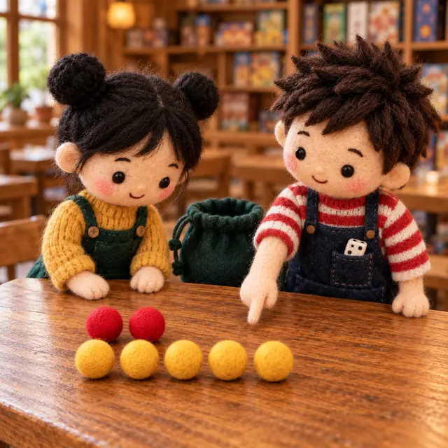
視覺互動探索：看顏色還是數顆數？
調整三種顏色的顆數，選一個要取到的顏色。上面那行是「看顏色種類」的錯誤算法，下面是「數顆數」的正確算法——什麼時候兩者剛好一樣？
形成性評量 (數個數)
Q7. 桌遊袋裡有 \(11\) 枚紅色籌碼、\(13\) 枚黃色籌碼，大小、材質都相同。從袋中任取一枚，取到紅色籌碼的機率是多少？
解析：答案為 B。共 \(11 + 13 = 24\) 枚，每一枚被取到的機會相等，紅色 \(11\) 枚，機率 \(\frac{11}{24}\)。
A 錯：只看顏色有兩種，但兩種的枚數不一樣，機會不相等。
C 錯：分母要用全部的枚數 \(24\)，不是黃色的 \(13\)。
D 錯：\(\frac{13}{24}\) 是取到黃色籌碼的機率。
Q8. 袋中有大小、材質相同的號碼球：\(1\) 號 \(1\) 顆、\(2\) 號 \(3\) 顆、\(3\) 號 \(4\) 顆、\(4\) 號 \(6\) 顆。從袋中任取一顆，取到偶數號球的機率是多少？
解析：答案為 D。共 \(1 + 3 + 4 + 6 = 14\) 顆，偶數號球有 \(3 + 6 = 9\) 顆，機率 \(\frac{9}{14}\)。
A 錯：只看號碼 \(1 \sim 4\) 裡有 \(2\) 個偶數，但每個號碼的顆數不一樣。
B 錯：\(\frac{5}{14}\) 是取到奇數號球的機率。
C 錯：分母錯用了號碼的和 \(1 + 2 + 3 + 4 = 10\)，應該用顆數的和。
重點 5：抽籤——列出事件包含哪些號碼
重點整理與敘述
- 籤筒中有編號 \(1 \sim N\) 的 \(N\) 支籤，任抽一支：所有可能的結果有 \(N\) 種、機會相等。
- 先把符合事件的號碼一個一個列出來再數，例：\(1 \sim 10\) 號——
- \(3\) 的倍數：\(3\)、\(6\)、\(9\)，機率 \(\frac{3}{10}\)。
- \(5\) 的倍數：\(5\)、\(10\)，機率 \(\frac{2}{10} = \frac{1}{5}\)。
- 既是 \(3\) 的倍數又是 \(5\) 的倍數：一支也沒有，機率 \(0\)（不可能事件）。
- 編號不是 \(4\)：只有 \(1\) 支不符合，\(10 - 1 = 9\) 支符合，機率 \(\frac{9}{10}\)。
- 容易漏數的地方：\(1\) 不是質數；一個數的因數包含 \(1\) 和它自己；「既是……又是……」要同時符合兩個條件。
視覺互動探索：籤筒找號碼
調整籤的支數，再選一個事件，符合的籤會亮起來。試試「質數」「\(N\) 的因數」：哪幾個號碼最容易漏掉？
形成性評量 (抽籤)
Q9. 籤筒中有 \(24\) 支籤，逐一標上 \(1 \sim 24\) 的號碼，從中任意抽出一支，每支被抽中的機會相等。抽到的號碼是 \(24\) 的因數的機率是多少？
解析：答案為 A。\(24\) 的因數有 \(1\)、\(2\)、\(3\)、\(4\)、\(6\)、\(8\)、\(12\)、\(24\)，共 \(8\) 個，機率 \(\frac{8}{24} = \frac{1}{3}\)。
B 錯：漏掉了 \(1\) 和 \(24\)，只數到 \(6\) 個，\(\frac{6}{24} = \frac{1}{4}\)。
C 錯：漏掉了 \(1\)，只數到 \(7\) 個。
Q10. 籤筒中有 \(40\) 支籤，逐一標上 \(1 \sim 40\) 的號碼，從中任意抽出一支。抽到的號碼既是 \(4\) 的倍數、又是 \(6\) 的倍數的機率是多少？
解析：答案為 C。同時是 \(4\) 和 \(6\) 的倍數，就是 \(12\) 的倍數：\(12\)、\(24\)、\(36\)，共 \(3\) 個，機率 \(\frac{3}{40}\)。
A 錯：以為要是 \(4 \times 6 = 24\) 的倍數，只數到 \(24\)。
B 錯：把 \(4\) 的倍數 \(10\) 個與 \(6\) 的倍數 \(6\) 個相加，那是「只要符合其中一個」還多算了重複的。
D 錯：只數了 \(4\) 的倍數。
重點 6：擲骰子——把每一面分給事件，機率加起來是 1
重點整理與敘述
- 擲一顆公正的骰子：所有可能的結果是 \(1\) 到 \(6\) 點共 \(6\) 種，機會相等。
- 遊戲規則把 \(6\) 個面分給不同的結果時，逐條列出每種結果包含哪幾面。例（園遊會擲骰吃美食）：
- 點數是偶數（\(2\)、\(4\)、\(6\)）吃臭豆腐：\(\frac{3}{6} = \frac{1}{2}\)。
- 點數是比 \(5\) 小的奇數（\(1\)、\(3\)）吃炸雞排：\(\frac{2}{6} = \frac{1}{3}\)。
- 點數是 \(5\) 吃烤香腸：\(\frac{1}{6}\)。
- 每一面都一定會落在其中一種結果裡、而且不重複，所以這幾種結果的機率加起來是 \(1\)，可以用來檢查有沒有漏數。
- 骰子的面上若有重複的數字（改造骰子），要數「面數」，不是數「有幾種數字」。
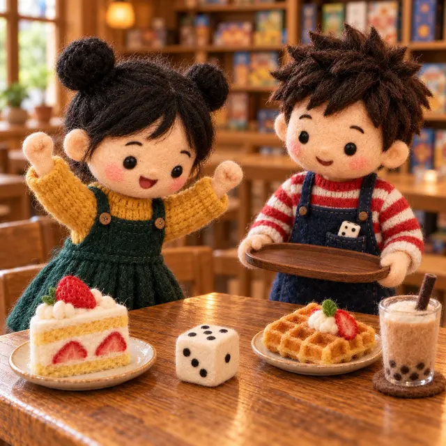
視覺互動探索：自己訂換點心的規則
點畫面上的骰子（或下方按鈕），把那一面換成另一種點心。不管怎麼分，三種點心的機率加起來都是多少？讓某種點心一面都分不到時，它的機率是多少？
形成性評量 (擲骰子)
Q11. 桌遊咖啡館擲一顆公正的骰子換點心：點數是 \(4\) 的因數換蛋糕、點數是 \(3\) 或 \(5\) 換鬆餅、點數是 \(6\) 換奶茶。換到鬆餅的機率是多少？
解析：答案為 B。鬆餅包含 \(3\)、\(5\) 兩面，機率 \(\frac{2}{6} = \frac{1}{3}\)。
A 錯：\(\frac{1}{2}\) 是蛋糕的機率（\(4\) 的因數 \(1\)、\(2\)、\(4\) 共 \(3\) 面）。
C 錯：\(\frac{1}{6}\) 是奶茶的機率。
檢查：\(\frac{3}{6} + \frac{2}{6} + \frac{1}{6} = 1\)，沒有漏數。
Q12. 阿骰做了一顆改造骰子，六個面分別標上 \(1\)、\(2\)、\(2\)、\(3\)、\(3\)、\(3\)，擲出每一面的機會相等。擲出數字 \(3\) 的機率是多少？
解析：答案為 D。機會相等的是 \(6\) 個面，標 \(3\) 的有 \(3\) 面，機率 \(\frac{3}{6} = \frac{1}{2}\)。
A 錯：數字只有 \(1\)、\(2\)、\(3\) 三種，但三種數字占的面數不一樣，機會不相等。
B 錯：把 \(3\) 只算成一面。
C 錯：\(\frac{5}{6}\) 是擲出 \(2\) 或 \(3\) 的機率。
重點 7：撲克牌——52 張 \(=\) 4 種花色 \(\times\) 13 種點數
重點整理與敘述
- 一副撲克牌（不含鬼牌）共 \(52\) 張：黑桃 ♠、紅心 ♥、方塊 ♦、梅花 ♣ 各 \(13\) 張，點數是 A、K、Q、J、10、9、……、2。
- 紅心、方塊是紅色，黑桃、梅花是黑色，紅、黑各 \(26\) 張。
- 把牌排成 \(4\) 列 \(\times\) \(13\) 行的表，事件的張數＝符合的花色數 \(\times\) 符合的點數數。例：
- 紅色：\(\frac{26}{52} = \frac{1}{2}\)；梅花：\(\frac{13}{52} = \frac{1}{4}\)。
- 點數是 K：\(4\) 種花色各 \(1\) 張，\(\frac{4}{52} = \frac{1}{13}\)。
- 英文字母（A、K、Q、J）：\(4 \times 4 = 16\) 張；數字（2～10）：\(4 \times 9 = 36\) 張。
- 「或」的事件（例：紅心或 K）不能直接相加：兩邊重疊的那張要扣掉，最穩的作法是在表上直接圈出來數。
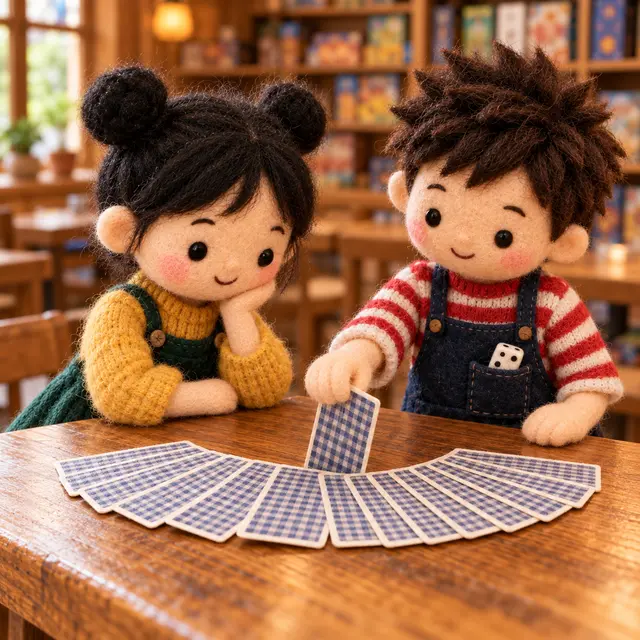
視覺互動探索：52 張牌的表
選一個花色條件和一個點數條件，符合「兩個條件都成立」的牌會亮起來。對照亮起來的張數，和「花色數 \(\times\) 點數數」是不是一樣？
形成性評量 (撲克牌)
Q13. 從一副 \(52\) 張的撲克牌（不含鬼牌）中任意抽出一張，每張被抽中的機會相等。抽到的牌是「紅心或 K」的機率是多少？
解析：答案為 A。紅心 \(13\) 張，再加上另外三種花色的 K 共 \(3\) 張（紅心 K 已經算過）：\(13 + 3 = 16\) 張，機率 \(\frac{16}{52} = \frac{4}{13}\)。
B 錯：\(13 + 4 = 17\)，把紅心 K 算了兩次。
C 錯：\(\frac{1}{52}\) 是「紅心而且是 K」的機率。
D 錯：只算了紅心。
Q14. 從一副 \(52\) 張的撲克牌（不含鬼牌）中任意抽出一張。抽到的牌點數是 \(3\)、\(6\) 或 \(9\) 的機率是多少？
解析：答案為 C。\(3\) 種點數 \(\times\) \(4\) 種花色 \(= 12\) 張，機率 \(\frac{12}{52} = \frac{3}{13}\)。
A 錯：每種點數只算了一張，忘了有 \(4\) 種花色。
B 錯：\(\frac{1}{4}\) 是抽到某一種花色的機率。
D 錯：\(\frac{9}{13}\) 是抽到數字牌（\(2 \sim 10\)）的機率。
重點 8：抽出後不放回——用「剩下的」重新數
重點整理與敘述
- 抽出來的球不放回，袋子裡的球就變少了；下一次抽球時，機會相等的是袋子裡剩下的每一顆。
- 所以分子、分母都要改成剩下的數量：
- 分母：原本的總數 \(-\) 已經拿走的顆數。
- 分子：原本這種球的顆數 \(-\) 已經拿走的這種球。
- 如果規則是「某種球放回、另一種不放回」，只有不放回的那種會變少。
- 例：箱內 \(50\) 顆白球、\(10\) 顆紅球，白球抽出放回、紅球不放回；前面共抽出紅球 \(4\) 次，下一次抽紅球的機率是 \(\frac{10 - 4}{60 - 4} = \frac{6}{56} = \frac{3}{28}\)。
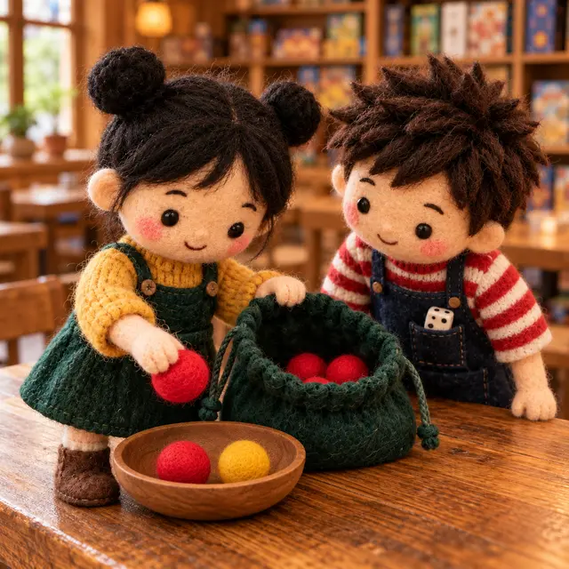
視覺互動探索：已經抽出去的球
設定袋子裡原本有幾顆紅球、白球，再設定已經抽出（不放回）幾顆。下一次抽到紅球（或白球）的機率，和一開始比起來變大還是變小？
形成性評量 (不放回再抽)
Q15. 箱內有 \(40\) 顆白球和 \(12\) 顆紅球。阿骰每次從箱內抽出一顆：抽到白球就放回、抽到紅球就不放回。已知前 \(20\) 次共抽出紅球 \(5\) 次，第 \(21\) 次抽球時箱內每顆球被抽出的機會相等，這次抽到紅球的機率是多少？
解析：答案為 B。白球都放回了，仍是 \(40\) 顆；紅球被拿走 \(5\) 顆，剩 \(7\) 顆。箱內共 \(47\) 顆：
\[\frac{12 - 5}{52 - 5} = \frac{7}{47}\]
A 錯：\(\frac{12}{52} = \frac{3}{13}\) 是一開始的機率，沒有扣掉拿走的紅球。
C 錯：分子扣了、分母沒扣，分母也要改成剩下的 \(47\) 顆。
D 錯：分子用了「已經拿走的」\(5\) 顆，應該用剩下的 \(7\) 顆。
Q16. 箱子裡有號碼 \(1 \sim 5\) 的球，每個號碼各 \(2\) 顆，共 \(10\) 顆。小棋先抽出 \(4\) 顆且不放回，號碼是 \(1\)、\(1\)、\(3\)、\(4\)。阿骰再從剩下的球中任抽一顆，他抽到的號碼與小棋已抽出的任一顆號碼相同的機率是多少？
解析：答案為 D。剩下 \(6\) 顆：\(2\)、\(2\)、\(3\)、\(4\)、\(5\)、\(5\)。小棋抽出的號碼是 \(1\)、\(3\)、\(4\)，但兩顆 \(1\) 號已經都被拿走，剩下的球裡只有 \(3\)、\(4\) 各 \(1\) 顆符合，機率 \(\frac{2}{6} = \frac{1}{3}\)。
A 錯：分子數對了 \(2\) 顆，分母卻用了原本的 \(10\) 顆，\(\frac{2}{10} = \frac{1}{5}\)。
B 錯：只看號碼 \(1 \sim 5\) 中有 \(3\) 種號碼被抽過，\(\frac{3}{5}\)；但兩顆 \(1\) 號都已經不在箱子裡了。
C 錯：以為 \(1\) 號還剩一顆，數成 \(3\) 顆。
重點 9：樹狀圖——一層一層列出所有結果
重點整理與敘述
- 結果不是一眼看得完時，用樹狀圖逐次列出：第一層畫出第一次的所有結果，每一個後面再接上第二次的所有結果。
- 每一個末端就是一種結果，用數對表示，例：\((\text{正}, \text{反})\) 表示第一次正面、第二次反面。
- 例：投擲一枚硬幣兩次（或一個家庭有兩個小孩）——
- 結果有 \((\text{正}, \text{正})\)、\((\text{正}, \text{反})\)、\((\text{反}, \text{正})\)、\((\text{反}, \text{反})\) 共 \(2 \times 2 = 4\) 種。
- 兩次都是反面：\(\frac{1}{4}\)；一次正面、一次反面：\((\text{正}, \text{反})\) 和 \((\text{反}, \text{正})\) 是兩種不同的結果，機率 \(\frac{2}{4} = \frac{1}{2}\)，不是 \(\frac{1}{3}\)。
- 第一次有 \(a\) 種、第二次有 \(b\) 種，末端共 \(a \times b\) 個（例：動物盒玩 \(5\) 款、汽車盒玩 \(4\) 款，各買一盒共 \(20\) 種）。
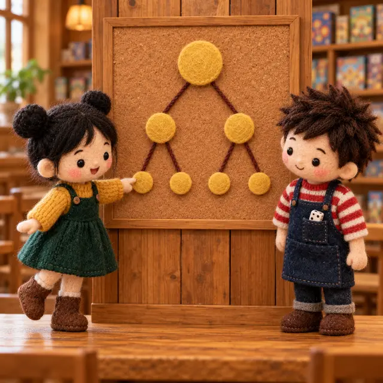
視覺互動探索：點選末端畫出事件
選第一次和第二次要用的道具，畫出樹狀圖；點選最下面的末端，把你要的事件圈出來。試試「兩次一樣」「第一次是某一種」各有幾個末端？
形成性評量 (樹狀圖)
Q17. 同時投擲一枚公正的硬幣和一顆公正的骰子。硬幣出現正面、而且骰子點數是 \(3\) 的倍數的機率是多少？
解析：答案為 A。樹狀圖第一層是硬幣（正、反），每一個後面接骰子的 \(6\) 種點數，共 \(2 \times 6 = 12\) 種。符合的有 \((\text{正}, 3)\)、\((\text{正}, 6)\) 共 \(2\) 種，機率 \(\frac{2}{12} = \frac{1}{6}\)。
B 錯：只算了骰子是 \(3\) 的倍數，沒有管硬幣。
C 錯：只算了硬幣是正面。
D 錯：只數到 \((\text{正}, 3)\) 一種，漏了 \(6\) 點。
Q18. 甲袋中有紅、白、藍三顆球，乙袋中有紅、白兩顆球，大小材質都相同。從甲、乙兩袋各任取一顆球，兩顆球顏色相同的機率是多少？
解析：答案為 C。第一層甲袋 \(3\) 種、第二層乙袋 \(2\) 種，共 \(3 \times 2 = 6\) 種。顏色相同的有 \((\text{紅}, \text{紅})\)、\((\text{白}, \text{白})\) 共 \(2\) 種，機率 \(\frac{2}{6} = \frac{1}{3}\)。
A 錯：分母用了兩袋球的總數 \(5\)，但結果是「一對球」，要用 \(3 \times 2\)。
B 錯：以為「同色、不同色」兩種各占一半。
D 錯：\(\frac{2}{3}\) 是顏色不同的機率。
重點 10：兩人比輸贏——用樹狀圖判斷公不公平
重點整理與敘述
- 兩個人各做一個選擇（出拳、出牌），第一層畫第一個人的選擇、第二層畫第二個人的選擇，在每個末端寫上誰贏。
- 例：猜拳一次，兩人出剪刀、石頭、布的機會相同：共 \(3 \times 3 = 9\) 種，甲贏 \(3\) 種、乙贏 \(3\) 種、平手 \(3\) 種，各 \(\frac{3}{9} = \frac{1}{3}\)——公平。
- 例：比數字牌，小妍有 \(1\)、\(2\)、\(6\)、\(8\)，小翊有 \(3\)、\(4\)、\(5\)、\(7\)，各出一張比大小：共 \(4 \times 4 = 16\) 種，小妍贏的有 \(7\) 種，機率 \(\frac{7}{16}\)。
- 贏、輸、平手三種結果的機率加起來是 \(1\)；兩人贏的機率相等，遊戲才公平。
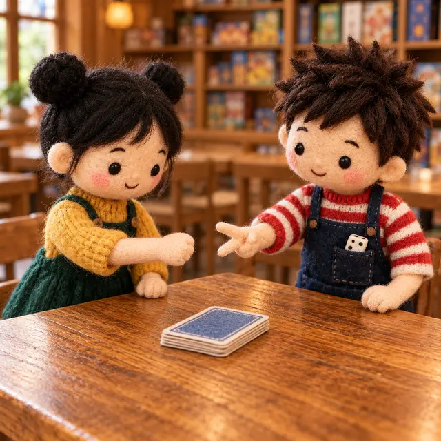
視覺互動探索：誰比較容易贏？
選「數字牌」時，調整兩人各自的 3 張牌；選「猜拳」看剪刀石頭布。每個末端下面標出勝負——什麼樣的牌會讓遊戲變得公平？
形成性評量 (比輸贏)
Q19. 小棋有 \(4\) 張數字牌 \(3\)、\(5\)、\(6\)、\(9\)，阿骰有 \(4\) 張數字牌 \(2\)、\(4\)、\(7\)、\(8\)。兩人各從自己的牌中任意出一張比大小，數字大的贏，每張牌被出的機會相等。小棋贏的機率是多少？
解析：答案為 D。共 \(4 \times 4 = 16\) 種。小棋出 \(3\) 贏 \(1\) 種（對 \(2\)）、出 \(5\) 贏 \(2\) 種、出 \(6\) 贏 \(2\) 種、出 \(9\) 贏 \(4\) 種，共 \(9\) 種，機率 \(\frac{9}{16}\)。
A 錯：以為兩人各有 \(4\) 張牌就一定公平。
B 錯：\(\frac{7}{16}\) 是阿骰贏的機率（本題沒有平手）。
C 錯：只看小棋 \(4\) 張牌中只有 \(9\) 一定會贏。
Q20. 小棋有 \(4\) 張數字牌 \(2\)、\(4\)、\(6\)、\(8\)，阿骰有 \(4\) 張數字牌 \(3\)、\(4\)、\(5\)、\(6\)。兩人各從自己的牌中任意出一張，數字相同就是平手。平手的機率是多少？
解析：答案為 B。共 \(4 \times 4 = 16\) 種，平手的有 \((4, 4)\)、\((6, 6)\) 共 \(2\) 種，機率 \(\frac{2}{16} = \frac{1}{8}\)。
A 錯：以為結果只有「小棋贏、阿骰贏、平手」三種，但這三種的機會並不相等。
C 錯：只數到一種平手。
D 錯：\(\frac{2}{4}\) 只看了小棋這一層，沒有乘上阿骰那一層。
重點 11：兩顆骰子——36 個數對 \((a, b)\)
重點整理與敘述
- 依序擲兩顆公正的骰子（或一顆骰子擲兩次）：樹狀圖第一層 \(6\) 個、每個再接 \(6\) 個，共 \(6 \times 6 = 36\) 種結果。
- 結果很多時，改用數對 \((a, b)\) 排成 \(6 \times 6\) 的表：\(a\) 是第一顆的點數、\(b\) 是第二顆的點數，每一格機會相等。
- \((1, 2)\) 和 \((2, 1)\) 是兩種不同的結果；\((6, 5)\) 和 \((5, 4)\) 的機率都是 \(\frac{1}{36}\)。
- 例：
- 兩顆都出現 \(1\) 點：只有 \((1, 1)\)，機率 \(\frac{1}{36}\)。
- 點數和為 \(4\)：\((1, 3)\)、\((2, 2)\)、\((3, 1)\)，機率 \(\frac{3}{36} = \frac{1}{12}\)。
- 兩顆點數都是合數：\((4, 4)\)、\((4, 6)\)、\((6, 4)\)、\((6, 6)\)，機率 \(\frac{4}{36}\)。
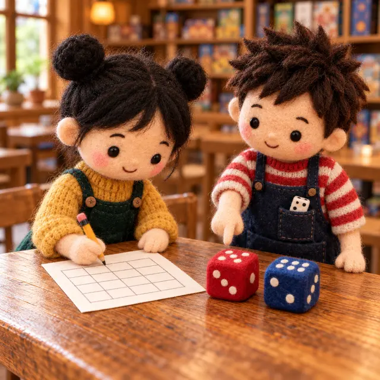
視覺互動探索：36 格數對表
選一個事件（點數和要先調整 \(k\)），符合的數對會亮起來。點數和是多少時格子最多？亮起來的格子排成什麼形狀？
形成性評量 (兩顆骰子)
Q21. 依序投擲兩顆公正的骰子，兩顆骰子點數的乘積是 \(12\) 的機率是多少？
解析：答案為 C。乘積為 \(12\) 的數對有 \((2, 6)\)、\((6, 2)\)、\((3, 4)\)、\((4, 3)\) 共 \(4\) 個，機率 \(\frac{4}{36} = \frac{1}{9}\)。
A 錯：只數了 \((2, 6)\)、\((3, 4)\)，把順序相反的當成同一種。
B 錯：漏了一個數對，只數到 \(3\) 個。
D 錯：\(\frac{6}{36}\) 是點數和為 \(7\) 的機率。
Q22. 依序投擲兩顆公正的骰子，第一顆的點數比第二顆大的機率是多少？
解析：答案為 A。\(36\) 個數對中，兩顆相同的有 \(6\) 個；其餘 \(30\) 個裡，第一顆大、第二顆大各占一半，各 \(15\) 個。機率 \(\frac{15}{36} = \frac{5}{12}\)。
B 錯：忘了扣掉兩顆點數相同的 \(6\) 個。
C 錯：\(\frac{21}{36}\) 是「第一顆大於或等於第二顆」的機率。
重點 12：取後放回、取後不放回——第二層少一支
重點整理與敘述
- 從 \(n\) 顆球中依序抽兩次：
- 取後放回：第二次又是 \(n\) 顆任取，共 \(n \times n\) 種，兩次可以抽到同一顆。
- 取後不放回：第二次只剩 \(n - 1\) 顆，樹狀圖每一支下面都少了「剛剛抽走的那一顆」，共 \(n \times (n - 1)\) 種。
- 例：袋中 \(1 \sim 4\) 號球，取後放回抽兩次，第二次號碼比第一次大：\(\frac{6}{16} = \frac{3}{8}\)。
- 例：桶中 \(1 \sim 3\) 號球，取後不放回抽兩顆，號碼和是奇數：\((1, 2)\)、\((2, 1)\)、\((2, 3)\)、\((3, 2)\)，共 \(\frac{4}{6} = \frac{2}{3}\)；也可以用數對直接列出 \(6\) 種，結果相同。
- 取後不放回時，「兩次抽到同一顆」是不可能事件，機率 \(0\)。
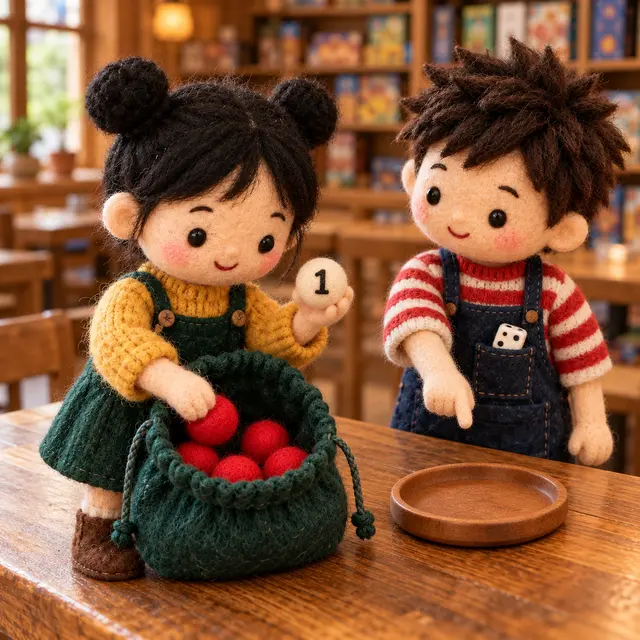
視覺互動探索：放回去，還是不放回？
切換「放回」與「不放回」，看樹狀圖哪些末端消失了（紅叉）。同一個事件在兩種抽法下，機率一樣嗎？
形成性評量 (放回與不放回)
Q23. 籤筒內有 \(6\) 支籤，分別標記號碼 \(1 \sim 6\)。小棋以「每次取一支、取後不放回」的方式抽出兩支，每一種結果發生的機會相同。兩支籤的號碼和為 \(7\) 的機率是多少？
解析：答案為 B。不放回共 \(6 \times 5 = 30\) 種。和為 \(7\) 的有 \((1, 6)\)、\((6, 1)\)、\((2, 5)\)、\((5, 2)\)、\((3, 4)\)、\((4, 3)\) 共 \(6\) 種，機率 \(\frac{6}{30} = \frac{1}{5}\)。
A 錯：\(\frac{6}{36}\) 用了放回的 \(6 \times 6\)。
C 錯：分子只數了 \(3\) 種，把順序相反的當成同一種，分母卻用了有順序的 \(30\)。
D 錯：只數到 \(2\) 種。
Q24. 袋中有紅、黑、綠、黃四顆球，大小材質相同。阿骰從袋中依序抽兩次、取後不放回，每顆球被抽出的機會都相等。他第二次抽到紅球的機率是多少？
解析：答案為 D。不放回共 \(4 \times 3 = 12\) 種。第二次是紅球的有 \((\text{黑}, \text{紅})\)、\((\text{綠}, \text{紅})\)、\((\text{黃}, \text{紅})\) 共 \(3\) 種，機率 \(\frac{3}{12} = \frac{1}{4}\)——和第一次抽到紅球的機率一樣。
A 錯：以為第二次是「剩下 \(3\) 顆抽 \(1\) 顆」，但不知道第一次抽走的是不是紅球，要用樹狀圖把所有情形都列出來。
B 錯：\(\frac{1}{12}\) 是「指定第一次抽到某一色、第二次抽到紅球」的機率。
小節總結與核心回顧
機率速查表
- 機率的範圍：\(0 \le\) 機率 \(\le 1\)；不可能事件是 \(0\)，必然事件是 \(1\)。
- 實驗：次數愈多，比值通常愈接近機率；機率不是保證，前面的結果不影響下一次。
- 先檢查機會相等：\(n\) 種結果機會相等，每種才是 \(\frac{1}{n}\)；圖釘、長方體、大小不同的區域都不行。
- 某事件的機率 \(=\) 該事件所含結果的個數 \(\div\) 所有可能結果的個數——數「個數」，不數「種類」。
- 不放回：下一次用剩下的重新數，分子、分母一起改。
- 樹狀圖：末端個數 \(=\) 各層分支數相乘；順序不同是不同的結果；兩顆骰子用 \(36\) 個數對。
回到桌遊咖啡館：誰先玩？
布袋裡的紅球
3 顆黃球、1 顆紅球——機會相等的是每一顆球，不是每一種顏色。摸到紅球的機率是 \(\frac{1}{4}\)，不是 \(\frac{1}{2}\)。
換個公平的方法
改成擲一枚公正的硬幣：正面小棋先、反面阿骰先，兩人都是 \(\frac{1}{2}\)；或是猜拳，兩人贏的機率都是 \(\frac{1}{3}\)、平手就再猜一次。
結果一多就畫樹
兩個步驟以上的遊戲，先畫樹狀圖把每個末端列出來，再一個一個數——這是算機率最可靠的方法。